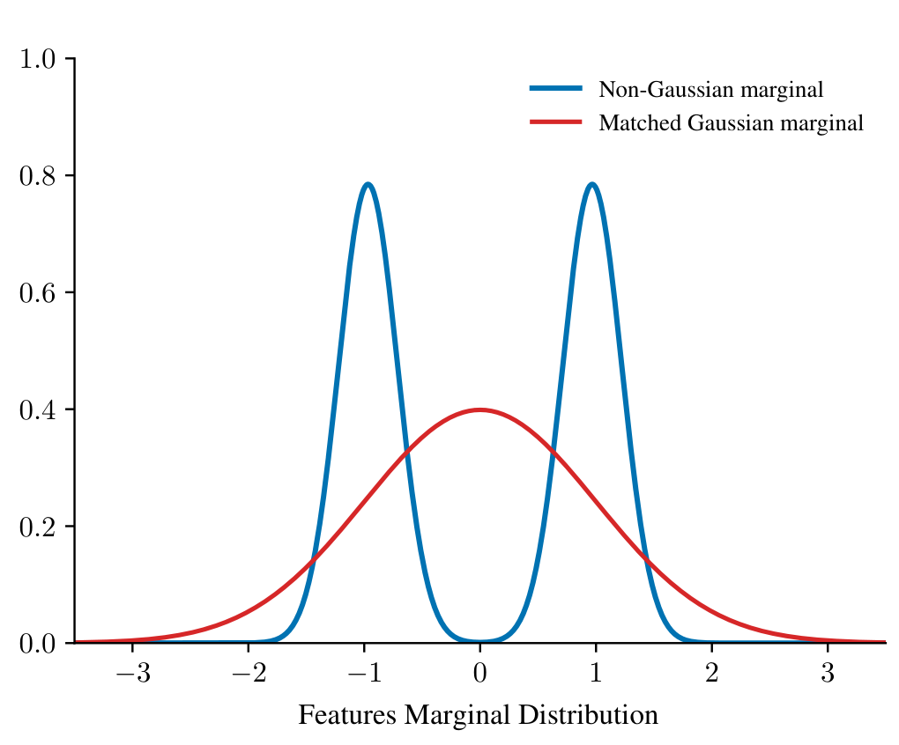
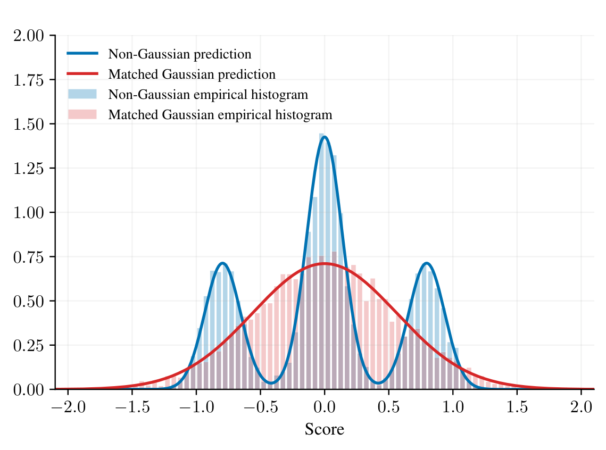
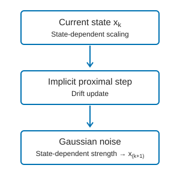
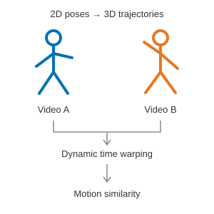
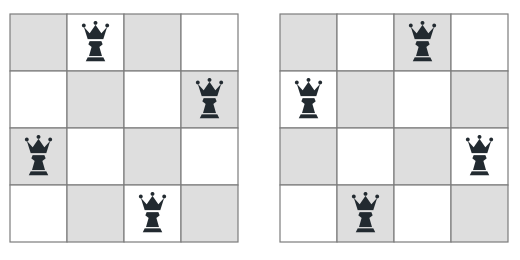

一般凸正则化下非高斯经验风险最小化（ERM）的渐近单样本代理模型 [链接]
- 研究具有相关非高斯特征和凸正则化的高维ERM（例如带伪Huber损失的ℓ1正则化）
- 构造具有渐近均值和预测方差转移性质的单样本代理模型；推导渐近预测分布及分类误差表达式
- 结合腔体Hamilton–Jacobi插值、留一法分析和凸响应微积分，处理非光滑惩罚项
- 在代理模型中保留特征与标签的分布信息，解释预测与变量选择中高斯普适性的失效
|   |
幂次调节近端采样算法
- 开发幂次调节近端Langevin采样器，结合隐式漂移更新与状态相关的高斯噪声，稳定超线性动力学并改善对重尾分布的探索
- 在尾部增长条件下建立几何遍历性，涵盖非幂次调节近端采样不具备几何遍历性的多项式尾目标分布
- 将幂次调节Langevin动力学表述为加权Wasserstein几何中的梯度流，为收敛性和离散化误差分析提供变分框架
|  |
基于深度学习的人体动作相似度评估框架
- 设计从二维视频评估动作相似度的框架，适用于不同角度、光照等条件
- 使用AlphaPose提取二维关节坐标序列，微调MotionBERT重建三维关节轨迹；结合余弦距离与动态时间规整（DTW）对齐动作序列
- 跨视频关键动作识别与匹配准确率达到93%
|  |
基于位运算与并行计算的N皇后问题求解
- 利用回溯与位运算，通过单条Oracle SQL查询求解N皇后问题
- 将皇后位置编码为位掩码，相比数值和字符串表示，存储需求降低超过80%，计算速度提升超过3倍
- 划分搜索空间进行并行计算并优化Oracle内存分配；在家用计算机上一周内求解18皇后问题，创下校内纪录
|  |